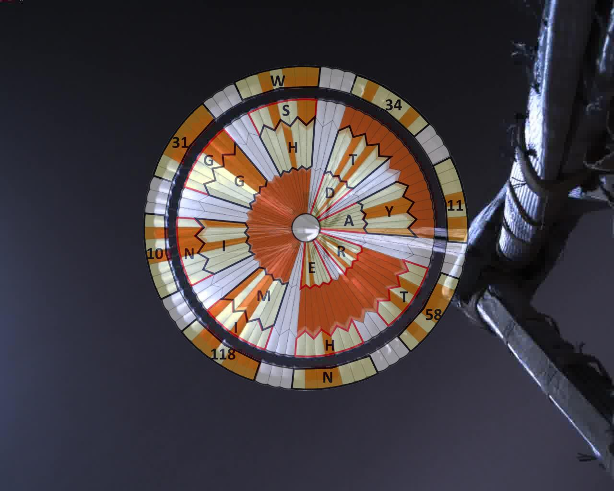

Task 1
Zadanie 1
"Code a Mars Landing" in "PYTHON" programming language.
Link>>> NASA Edu Project <<<
"Zakoduj Lądowanie na Marsie" w języku programowania "PYTHON".
Link>>> NASA Edu Projekt <<<


>>> Enlarge - new tab <<<
>>> Powiększ - nowa karta <<<
To simulate the control system of selected components, the central processing unit (computer) of which will be the Arduino Uno microcontroller - I will use the SimulIDE-0.4.14-SR4 program.
>>> Simulide.com <<<
Do symulacji systemu sterującego wybranymi podzespołami, którego centralną jednostką obliczeniową (komputerem), będzie mikrokontroler Arduino Uno - wykorzystam program SimulIDE-0.4.14-SR4.
>>> Simulide.com <<<
Of course, the above educational project is aimed only at introducing you to programming: on the basis of the first "practical" exercise - which allows you to simulate programming with the use of this simulation, then technically in "practice". The above project will contain only a few dozen lines of code for the "PYTHON" programming language, for just a few components, which is nothing compared to several hundred thousand lines of code for the real "PERSEVERANCE" rover, which are executives for an unknown number of components responsible for displacement, or for control and measurement and research equipment. In a word "COSMOS!" - the power of science and engineering.
✌♻️🚀🌌🌍🌎🌏🌌🛰💚✌
Oczywiście powyższy projekt edukacyjny, ma tylko i wyłącznie na celu wprowadzenie do programowania: na zasadzie pierwszego ćwiczenia "praktycznego" - które pozwala przeprowadzić symulację programowania z zastosowaniem tej symulacji potem technicznie w "praktyce". Powyższy projekt będzie zawierał jedynie kilkadziesiąt linijek kodu języka programowania "PYTHON", dla zaledwie kilku podzespołów, co jest niczym w porównaniu z kilkuset tysiącami liniami kodu prawdziwego łazika "PERSEVERANCE", które są programami wykonawczymi dla nieznanej mi liczby podzespołów odpowiedzialnych za przemiesczanie się, lub dla aparatury kontrolno - pomiarowej i naukowo badawczej. Jednym słowem "KOSMOS!" - potęga nauki i inżynierii.
✌♻️🚀🌌🌍🌎🌏🌌🛰💚✌
Computer simulation of hardware programming allows you to run it virtually - to make measurements in order to detect possible errors, without unnecessary damage to the hardware. Once we gain practice in simulations, it is worth getting equipment for real reality experiments and projects. Below is a link to Arduino kits that can be successfully used for your own various experiences of building smart home systems, or home workshop automation and basic robotics.
>>> Arduino kits - Allegro <<<
Symulacja komputerowa programowania sprzętu, pozwala uruchomić go wirtualnie - aby dokonać pomiarów w celu wykrycia ewentualnych błędów, bez niepotrzebnych uszkodzeń sprzętu. Gdy nabierzemy już praktyki na symulacjach, warto zaopatrzyć się w sprzęt do doświadczeń i projektów w realnej rzeczywistości. Poniżej umieszczam link do zestawów Arduino, które z powodzeniem można wykorzystać do własnych rozmaitych doświadczeń budowania systemów inteligentnego domu , domowej automatyki warsztatowej i podstaw robotyki.
>>> Zestawy Arduino - Allegro <<<
Polish Martianism should become our "national sport" - because Poles also have great predispositions to be an inseparable part of the world's elite in this field. I am referring here a bit to the history of the "Polish Winter Himalayan Mountaineering", the last main goal of which was realized this year by the Nepalese (Huge Respect). But the story doesn't end here - you just have to raise your head towards the "stars", because on Mars there is also its highest peak, Olympus Mons, which is 69 841 ft. Motivated? - so now you have to get there ... ;-).
>>> Olympus Mons <<<
Polski Marsjanizm powinien stać się naszym "sportem narodowym" - gdyż polacy również mają ogromne predyspozycje, aby być nieodłączną częścią światowej elity w tej dziedzinie. Nawiązuję tutaj trochę przy okazji do historii "Polskiego Himalaizmu Zimowego" , którego ostatni główny cel - został w tym roku zrealizowany przez Nepalczyków (Ogromny Szacun). Lecz historia tutaj wcacle się nie kończy - trzeba tylko unieść głowę w stronę "gwiazd", gdyż na Marsie jest jeszcze jego najwyższy szczyt Olympus Mons, który mierzy 21 287,4 m. Zmotywowani? - więc teraz trzeba tam dotrzeć... ;-).
>>> Olympus Mons <<<
"Dare Mighty Things - Odważ Się Na Potężne Rzeczy"
✌♻️🚀🌌🌍🌎🌏🌌🛰💚✌
"Far better is it to dare mighty things, to win glorious triumphs, even though checkered by failure ...
than to rank with those poor spirits who neither enjoy nor suffer much,
because they live in a gray twilight that knows not victory nor defeat."
"O wiele lepiej jest odważyć się na potężne rzeczy, odnieść chwalebne triumfy, nawet kosztem porażki...
niż zająć pozycję wśród tych biednych duchów, które nie cieszą się zbytnio i nie cierpią dużo,
ponieważ żyją w szarym zmierzchu, który nie zna ani zwycięstwa, ani porażki"
Teddy Roosevelt's "Strenuous Life" speech
At the end of this chapter - I have such a sophisticated surprise for you - about the binary coding system, donated to us by NASA scientists and engineers during the landing phase of the "PERSEVERANCE" rover on Mars.
Na zakończenie niniejszego rozdziału - mam dla Was oto, taką wyszukaną niespodziankę - dotyczącą systemu kodowania binarnego, zafundowaną nam przez naukowców i inżynierów NASA, podczas fazy lądowania łazika "PERSEVERANCE" na Marsie.

34°11'58.0"N 118°10'31.0"W
GPS coordinates of NASA's Southern California Jet Propulsion Laboratory (JPL) where the rover was built and project managed.
Współrzędne GPS Laboratorium Napędu Odrzutowego (JPL) NASA w południowej Kalifornii, gdzie zbudowano łazik i zarządzano projektem.
>>> Mars Decoder Ring <<<
Instruction for reading the code:
Instrukcja odczytania kodu: